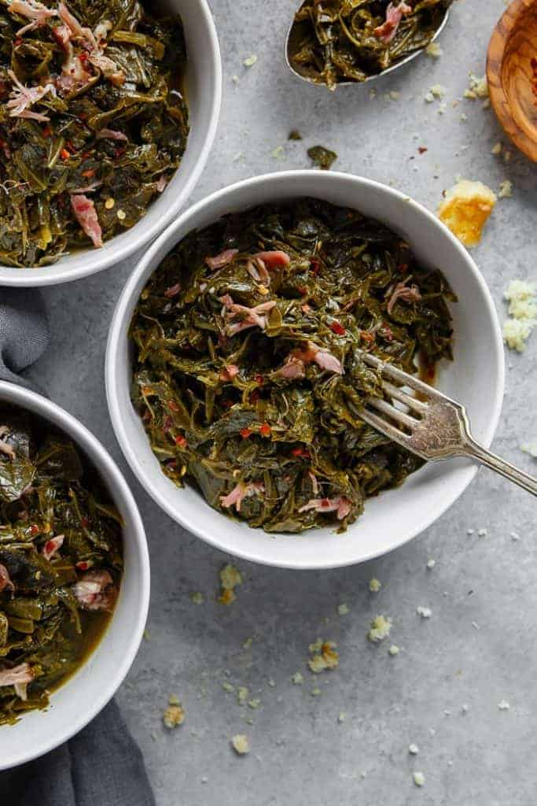

Collard Greens Recipe
SOUTHERN COLLARD GREENS RECIPE (JUST LIKE YOUR GRANDMA’S RECIPE!
These authentic Southern Collard Greens are braised in a savory meat flavored and perfectly spiced pot liquor resulting in an amazing tender silky texture!!! Serve with this cornbread or corn muffins and hot sauce for a true down home meal. Looking for the real deal? This is a true Southerner’s dream! If you love these, also check out my Creamed Spinach and Mustard Greens recipe!
Infgredients
- 6 small bunches collard greens
- 1 extra large smoked ham hock
- 2 tbsp granulated sugar
- 1 tbsp bacon grease
- 1 tbsp seasoned salt
Steps
- Start by pulling and tearing greens away from stems. Take a hand full of greens, roll them up and cut the rolls horizontally into small pieces. We personally remove the stems but this is a personal decision.